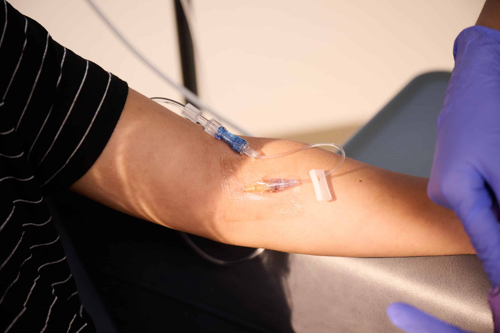

A low-cost, non-electrical solution to IV failure.
Protecting patients and care providers alike.
Protecting patients and care providers alike.
IF 90% OF US PATIENTS RECEIVE IV THERAPY...
What is our risk?
50%
of all IVs fail.
>60%
failure in children.
>90%
failure in infants.
The cost? In minor cases, blistering in pain. But in major cases? Scarring. Limbs. Lives.
IV failure costs hospitals over 18,000 USD per failure event in adults, and over 300,000,000 USD for neonates.
IV failure costs hospitals over 18,000 USD per failure event in adults, and over 300,000,000 USD for neonates.

IVs are the cornerstone
of modern medical care.
of modern medical care.
But they fail.
THIS PROBLEM IMPACTS ALL OF US.
Current methods of IV detection are few and too expensive for mass implementation
or use in low-resource settings.
Nurses perform hourly checks to examine for redness, swelling, or fluid leakage, but are often overwhelmed by the number of patients they must be monitoring.
Signs of failure are covered up by clothing or opaque securement patches.
Newborns and infants cannot advocate for their pain, or explain where it is coming from. Their small, friable veins are the most susceptible to failure.
Nurses perform hourly checks to examine for redness, swelling, or fluid leakage, but are often overwhelmed by the number of patients they must be monitoring.
Signs of failure are covered up by clothing or opaque securement patches.
Newborns and infants cannot advocate for their pain, or explain where it is coming from. Their small, friable veins are the most susceptible to failure.
WHAT DO WE DO NEXT?
IV-Safe offers a solution.

A simple patch that replaces the Tegaderm™ currently placed around an IV site, manufactured to
change color upon IV failure.
A lifesaving beacon for patients, especially for those who cannot advocate for themselves.
A lifesaving beacon for patients, especially for those who cannot advocate for themselves.
No
Electronics
Electronics
No
Specialized
Training
Specialized
Training
Seamless
Integration
Integration
Low
Cost
Cost
Thanks for visiting! This website is currently under construction.
Contact us at info@iv-safe.com with any questions.
Contact us at info@iv-safe.com with any questions.